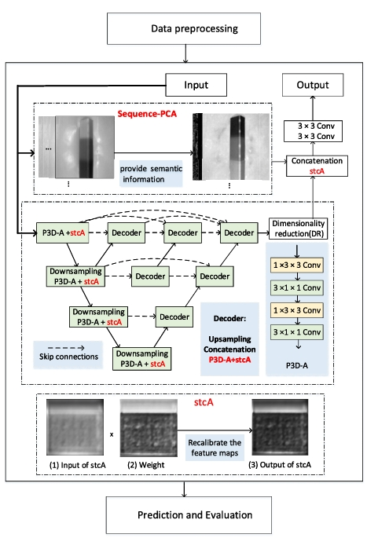

Bozhen Hu (胡博振) |
Biography
Bozhen Hu is pursuing his Ph.D at Zhejiang University (ZJU) & Westlake University, China, under the supervision of Chair Prof. Stan Z. Li (IEEE Fellow). He is currently focusing on AI for Life Science (e.g., AI + protein engineering, AI + enzyme engineering), Multi-modality research. Previously he focused on Image Processing, Computer Vision (CV), at University of University of Electronic Science and Technology of China (UESTC).Research Interest
Currently, I focus on the following research topics:- Graph Self-supervised Learning
- Domain Adaption
- Defect Detection
- Language Model
- Multimodal Modeling
- Graph Knowledge Distillation
- AI4Science (Protein/Enzyme Engineering)
Education
- 2021.09-present Ph.D in CAIRI, Westlake University. Supervisor: Prof. Stan Z. Li
- 2014.09-2018.06 M.Sc. in Automation Engineering, University of Electronic Science and Technology of China. Supervisor: Prof. Bin Gao
- 2014.09-2018.06 B.E. in University of Electronic Science and Technology of China.
Publications
Selected:
Deep Manifold Graph Auto-Encoder For Attributed Graph Embedding
|
Beyond Homophily: Relation-Based Frequency Adaptive Graph Neural Networks |
SimGRACE: A Simple Framework for Graph Contrastive Learning without Data Augmentation |
|  |
A Lightweight Spatial and Temporal Multi-Feature Fusion Network for Defect Detection |
Segment anything in defect detection |
 |
Protein language models and structure prediction: Connection and progression |
Learning complete protein representation by deep coupling of sequence and structure |
Deep Manifold Transformation for Protein Representation Learning |
Multimodal Distillation of Protein Sequence, Structure, and function |
Mole-bert: Rethinking pre-training graph neural networks for molecules |
RDesign: Hierarchical Data-efficient Representation Learning for Tertiary Structure-based RNA Design |
Services
Membership:
- IEEE, Student Member
- CCF Member
Program committee member | Reviewer
- IEEE Conference on Computer Vision and Pattern Recognition (CVPR)
- International Conference on Computer Vision (ICCV)
- ACM SIGKDD Conference on Knowledge Discovery and Data Mining (KDD)
- Conference and Workshop on Neural Information Processing Systems (NeurIPS)
- International Conference on Machine Learning (ICML)
- Advances in Neural Information Processing Systems (NIPS)
- Association for the Advancement of Artificial Intelligence (AAAI)
- Association for Computational Linguistics (ACL)
Selected Awards
- National Scholarship, First Prize of Academic Scholarship, National Encouragement scholarship in UESTC
- Academic Scholarship in ZJU
- Outstanding Graduate (Master's degree) in UESTC, 2021
- Excellent Merit Student in UESTC
- Outstanding Graduate in Sichuan Province, 2021
- Excellent Student Cadre in UESTC